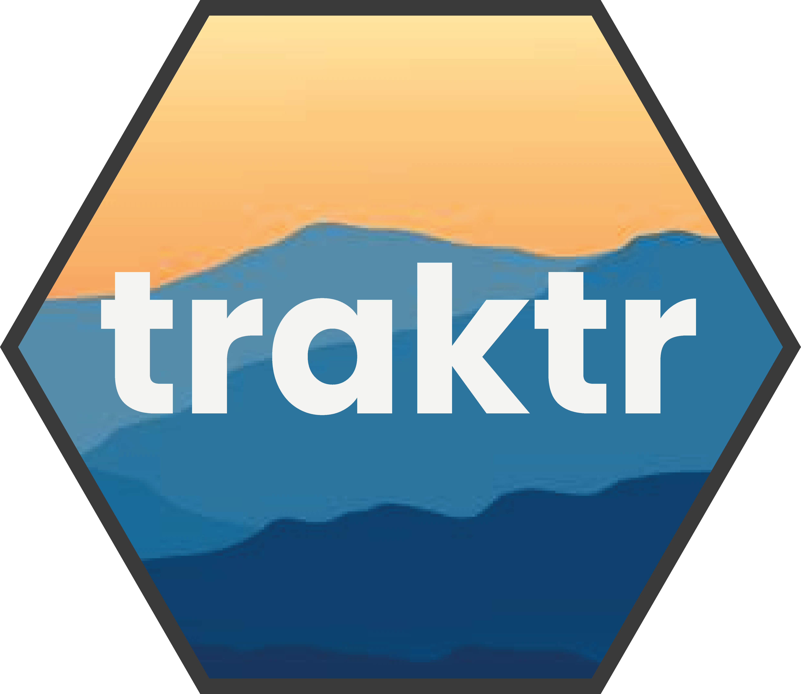
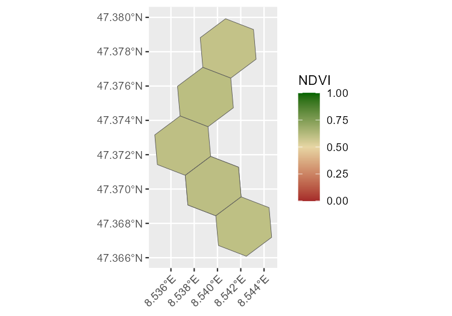

traktr 


Overview
The traktr package provides a tidy workflow for enriching GPS tracking data from Sentinel-2 imagery and related products. It supports both H3-based and buffer-based areas of interest (AOI), handles tiling, querying and rate-limited downloads from the Copernicus Data Space Ecosystem (CDSE), and attaches contextual statistics back to your GPS data.
Quick start
This snippet can be run offline. It creates the expected variables and generates buffers around GPS coordinates.
library(traktr)
library(dplyr)
library(sf)
# Demo points
gps <- tibble(
subject = rep("Z001", 6),
timestamp = as.POSIXct(c(
"2025-06-01 08:00",
"2025-06-01 08:05",
"2025-06-01 08:10",
"2025-06-01 08:15",
"2025-06-01 08:20",
"2025-06-01 08:25"
)),
lat = c(
47.37679857987844,
47.3739359784768,
47.37233750399134,
47.37044833531484,
47.36863176315391,
47.36720934345714
),
lon = c(
8.539868485211397,
8.538366448157388,
8.53830207514079,
8.539053093667793,
8.539739739178195,
8.544508706822644
)
)
hex <- gps |>
mutate_aoi_h3(res=9) |>
fetch_ndvi(from = as.Date("2025-04-01"),
to = as.Date("2025-07-31"),
out_dir = "~/.ndvi",
client = oauth,
resolution_m = 8) |>
attach_ndvi() |>
mutate(geometry = h3jsr::cell_to_polygon(h3)) |>
sf::st_as_sf(sf_column_name = "geometry", crs = 4326)
ggplot(hex, aes(fill = ndvi_mean))+
geom_sf() +
scale_fill_gradient2(
low = "brown",
mid = "#E7D6A4",
high = "darkgreen",
midpoint = 0.5,
limits = c(0,1)
)+
labs(fill = "NDVI")+
theme(axis.text.x = element_text(angle = 45, hjust = 1))
System requirements
- R ≥ 4.2
- For fetching Sentinel-2 data: CDSE account.
- Optional: GPS_SMB_ROOT for your CSV data directory.
Citation
Please cite traktr and data sources (Sentinel-2, ESA WorldCover) in publications.
citation("traktr")